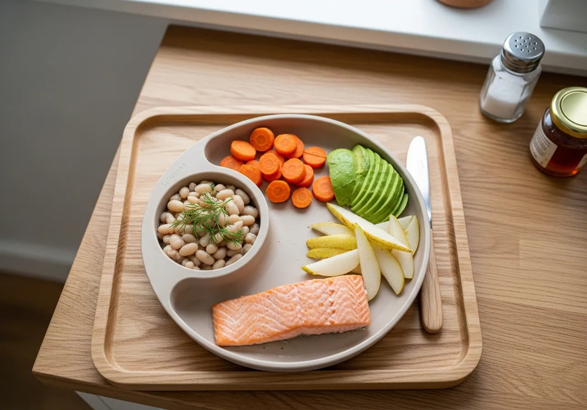
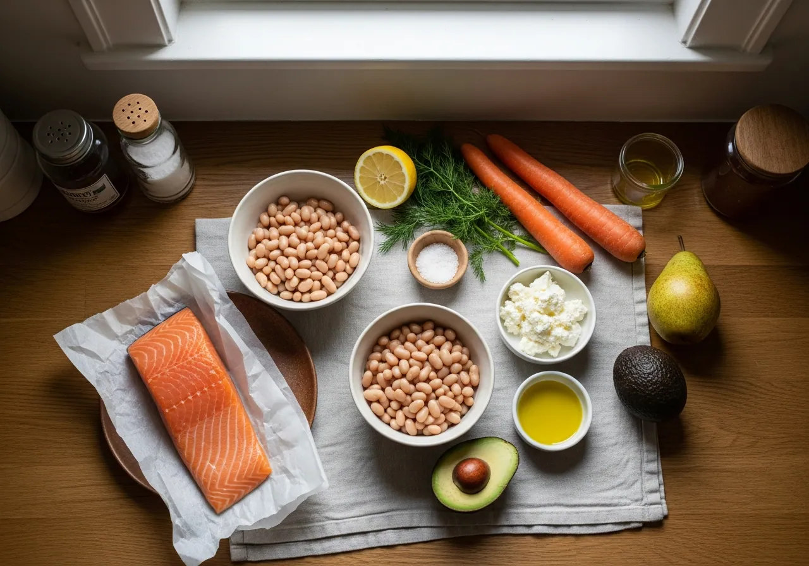
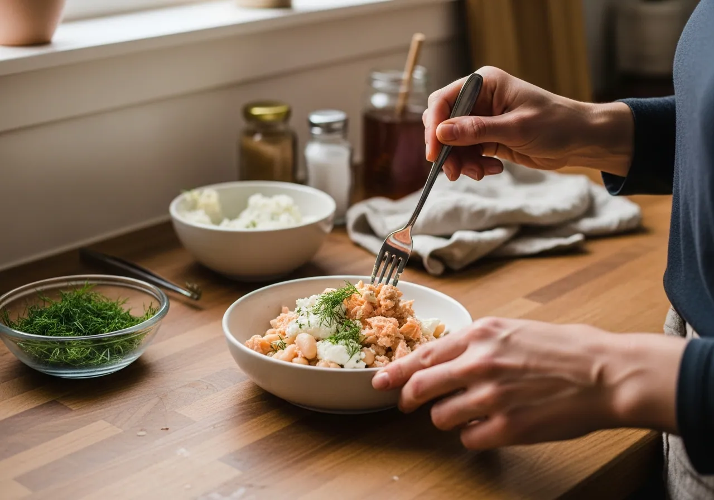
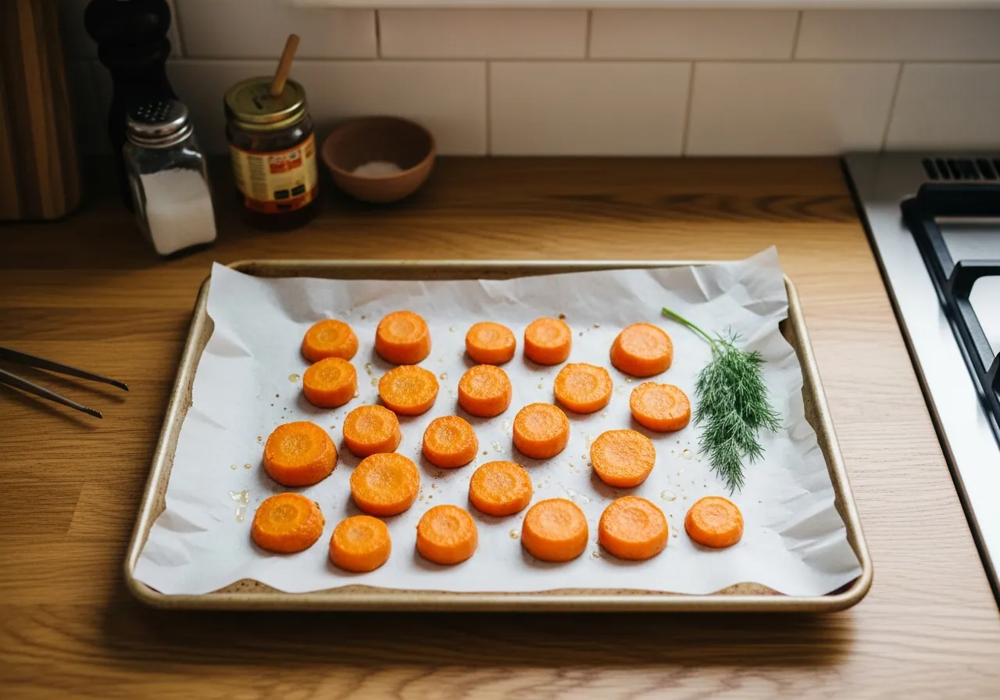
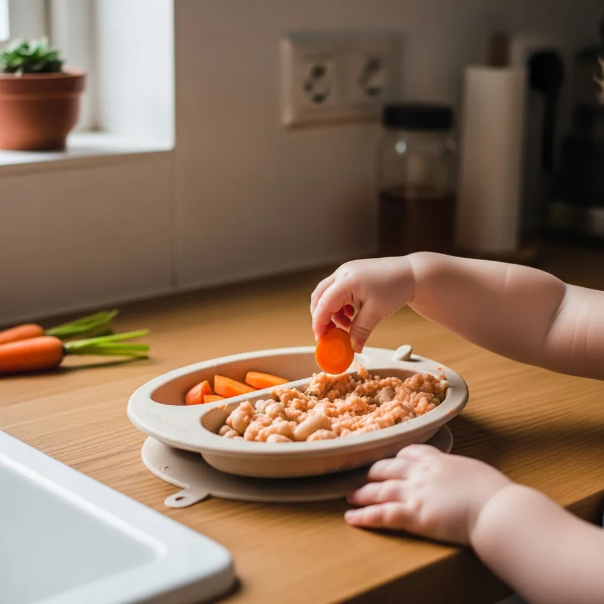
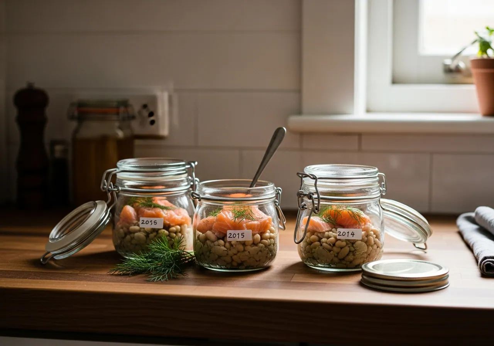

Salmon, white bean and dill mash for Aiden
A bright, dill-flecked salmon and white bean mash, made in one round of prep to cover three weekday lunches. Salmon for the omega-3s, white beans for fiber and slow energy, ricotta for a soft binder. Dill is the first new herb of the week, so watch for two days before introducing anything else.

The finished tray: salmon, white bean and dill mash in the well, carrot half-moons, avocado strips, pear strips.
What you are making
Three weekday lunches with a new herb to introduce.
Built on preps already in the rotation: Pre-portioned salmon fillets. Pull these from the fridge before you start.

Ingredients
Quantities make 3 baby lunches.
Mash, three portions
| Ingredient | Amount |
|---|---|
| Salmon, baked + flaked, skin off and bones checkedprep | 1 portion (~6 oz) |
| Cooked cannellini beans, drained, no salt | 1 cup |
| Whole-milk ricotta (or plain Greek yogurt) | ¼ cup |
| Olive oil | 1 tsp |
| Fresh dill, fronds, minced fine | 1 tsp |
| Lemon juice | ¼ tsp |
| Lemon zestoptional | pinch |
Finger sides, per lunch
| Roasted carrot half-moons, soft enough to squish | 5 to 6 |
| Ripe avocado, pinch-soft strips | 2 |
| Ripe pear, soft strips, skin off | 3 |
| Water in open cup, with assist | small pour |
Method
22 minutes of active time.

-
12 min at 400°F Bake the salmon.
Salmon portion on parchment, no salt. Pull when it flakes with a fork. Cool one minute so you can handle it.
-
2 min Bone check, then flake.
Run a finger over the fillet end to end, twice. Pull every pin bone. Then flake into small soft pieces. This step is non-negotiable.
-
2 min Warm the beans.
Skillet over medium with the olive oil. Press lightly with a fork so they break softly. No salt.
-
3 min Combine and mash.
Salmon, beans, ricotta, dill, lemon juice in a bowl. Fork-mash to a lumpy texture. Taste with the back of a clean spoon (you will want salt; do not add it here).
-
1 min Adjust.
Too thick: splash of water or breast milk or formula. Too loose: more beans.
-
2 min Portion.
Divide into three glass jars, about three-quarters of a cup each. Cool fully before sealing.
-
15 min at 400°F Roast the carrot sides.
Carrot rounds halved into half-moons, on parchment, no salt. Pull when they squish softly between fingers.
-
At serve Plate the tray.
Mash in the well; carrot, avocado, pear around the rim. Loaded spoon for self-feed, strips for hand grip.

Plate it
One safe choice in each grip category.

- Spoon load. Pre-load a baby spoon with mash and set it on the tray edge.
- Strip grip. Avocado and pear strips for the whole-hand grab.
- Pinch. Carrot half-moons and small salmon flakes for thumb-and-finger practice.
Open cup with assist for water. Sit-supervised eating. Watch for the dill reaction over the next two days.
Safety check
From the Chef Marco Baby Safety Notes for a 12-month-old.
Pass
- No salt added at any step
- No honey
- No choke shapes: whole grape, whole blueberry, round meatball, hard raw carrot, hard raw apple, whole nut
- Texture is lumpy + strips
- Only 4 teeth (front incisors), no molars yet: every piece must squish between finger and thumb, nothing that needs grinding
- Contains common allergens: fish, milk. Confirm none are on the no-go list for this child.
- Dill is new; start small, watch two to three days for reactions
- Cannellini bean is new; start small, watch two to three days for reactions
- Bone-check the salmon twice; pin bones are the real risk in this recipe, not the legumes.
- Sit-down eating only, never propped or in a moving stroller
Storage and reheat
Glass jars only. No plastic for warm food.

- Fridge. 2 days in sealed glass.
- Freezer. Up to 4 weeks. Thaw overnight in the fridge.
- Reheat. 30 seconds in the microwave, stir, 30 seconds more. Test on the inside of your wrist before serving.
- Do not. Refreeze a thawed portion. Reheat more than once. Hold cooked salmon mash longer than 48 hours in the fridge.
Adult version
Same base, one extra minute, fully seasoned.
After the three baby jars are sealed: add flaky salt, cracked pepper, a stronger squeeze of lemon, capers, and a heavier drizzle of olive oil. Serve over arugula, or fold into a wrap with thin red onion. A bright, light desk lunch on the same twenty-two minutes of active time.